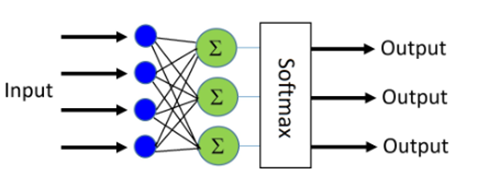
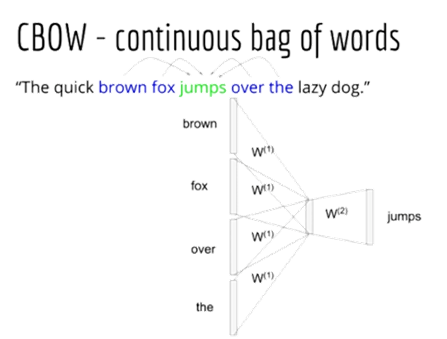
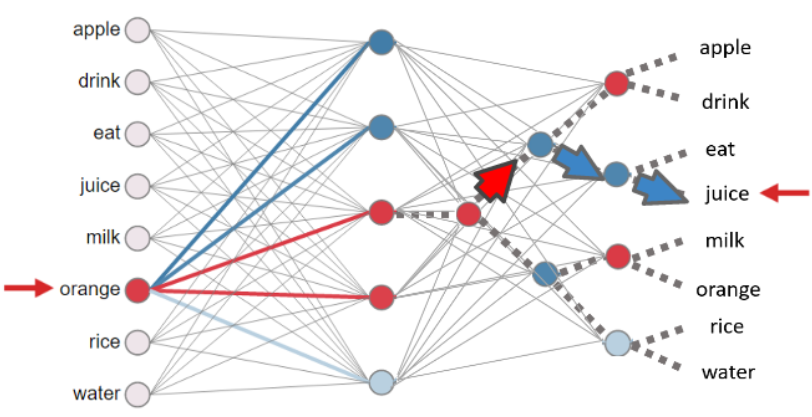
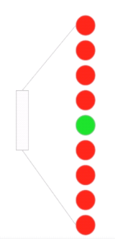
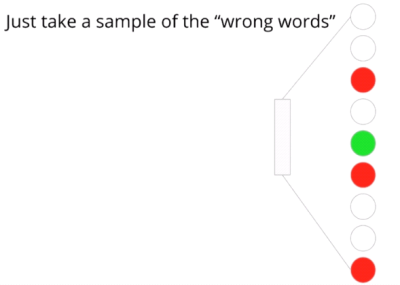

1. The Precursor Language Models to Word2Vec
1A. The Counting based Bigram Language Model
Sample Corpus:
> This is the house that Jack built.
> This is the malt
> That lay in the house that Jack built.
> This is the rat,
> That ate the malt
> That lay in the house that Jack built.
> This is the cat,
> That killed the rat,
> That ate the malt
> That lay in the house that Jack built.
What is the probability of house occurring given the before it?
Intuitively, we count,
\[ Prob \ ({ house \over the }) = { Count \ ( the \ house ) \over Count \ (the) } \]
Mathematically, the above formula can be writen as \[ P({ B \over A }) = { P( A, \ B ) \over \ P(B) } \]
What we have computed above is a Bigram Language Model:
\[ Bigram \ Model : { p ( W_t|W_{t-1} ) } \]
If you want to read more about Count-based Language Models, refer here
1B. Evolution of Word2Vec from Context Predicting based Language Models
How Word2Vec Evolved from Logistic Bigram Language Model

A. Simpler (Linear) Logistic Bigram Model

Forward Propagation: - If x is the current word vector and y is the vector of next word,
- Prob of y being the next word given the current word is is given by \[ y' = p(y \ | x) \ = \ softmax(W^Tx + B) \]
$$ y' = p(y=j |x) \ = {{e^{(w_j^T+ b_j)}} \over \sum \limits_{k=1}^K {e^{(w_k^T x + b_k)}}} $$
$$ Where\ j\ is\ one\ of\ the\ output\ words\ from\ a\ vocabulary\ size\ of\ K\ words $$Cost Function Equation: - How do we optimize W by finding gradient descent on the cost function \(J\) $ J $
- The cost function in our case is
\[ J = {{- 1 \over K } \sum \limits_{k1=1}^K \sum \limits_{k2=1}^K y_{k1,k2} \log {y'_{k1,k2}}} \]
\[ J = {{- 1 \over K } \sum \limits_{k1=1}^K \sum \limits_{k2=1}^K y_{k1,k2} \log {p(y_{k1,k2} | x_{k1})}} \] (since number of output class is same as the number of input words in a bigram language model)
Computing Gradient Descent on the Cost Function: - Step 1: Initalizing parameters to learn with Random Weights: Initialize W to random weights of size K x K (where K is the vocab size) and B to random weights of size K x 1 - Step 2: Compute gradient (a.k.a partial derivative) on $ J $ w.r.t W and B - Step 3: Perform Gradient Descent Update W based on $ J $ as - $ W = W - _W J $ - $ B = B - _B J $ where \(\eta\) is the learning rate - Repeat steps 1, 2, and 3 for an entire round of data, then one epoch of training is over. For every minibatch there is only a small shift in the weights. The size of the shifting of weights is determined by learning_rate parameter
Model Training Process: - While loss_curve not stagnating or X number of epochs are not over: - Repeat steps 1, 2, and 3 - Final W and B weights are used for model inferencing in the $ y’ = p(y | x) = softmax(W^Tx + B) $
B. Feed Forward Neural Network Bigram Model
A Typical Logistic Regression based Model:
\[ p(y|x) = softmax(W^T\ x) \]
A Neural Network based Model:
\[ h = tanh(W_1^T\ x)\] \[ p(y|x) = softmax(W_2^T\ h) \]
A Neural Network Bigram Model:
\[ p(x_{t+1} | x_t) = softmax(W_2^T tanh(W_1^T x_t)) \]
\[ Where\ x_t\ and\ x_{t+1} are words at positions t and t+1 \]
\[ Where\ W_1\ is\ of\ dimension\ K\ X\ D\ and\ W_2\ is\ of\ dimension\ D\ X\ K\ \]
\[ Where\ K\ is\ the\ vocabulary\ size\] \[ Where D\ is\ the\ number\ of\ neurons\ in\ the\ hidden\ layer\\]
The Cost Function and Model Training are similar to Logistic Bigram Model
2. Theory of Word2Vec
2A. What are the two types of Word2Vec Models?
1. Continuous Bag of Words:
- Predict focus word given bag-of-words context
- E.g. The quick brown fox jumps over the lazy dog
- current_slide_position = 4
- focus_word = sentence.split()[4] = “jumps”
- context_window_size = 2 (one of the hyperparameters)
- context_words = sentence.split()[4-2:4] + sentence.split()[4:4+2] = [brown, fox, over, the]
- E.g. The quick brown fox jumps over the lazy dog

- Training Data: p(jumps | brown), p(jumps | fox), p(jumps | over), p(jumps|the)
How CBOW works?
- Context size is one of the hyper paramaters of Word2Vec
- Usual size: 5-10 words. We can widen the context words by dropping stop words like “the”
Forward Propagation:
Step 1: Find the mean of the input word vectors - Compute the dot product of Weight matrix \(W_1\) with each of the context word vector \(c\) and then average the resulting word embeddings - Since we compute mean, the order of the context words does not influence the prediction (hence the bag-of-words name)
\[ h = {{1 \over \vert{C}\vert} {\sum \limits_{c \epsilon C} W_1^T c}}\] \[ Where\ h\ is\ the\ mean\ of\ the\ input\ context\ word\ embeddings \]
\[ Where\ C\ is\ the\ no.\ of\ Context\ Words \]
\[ Where\ c\ is\ the\ one-hot\ encoded\ vector\ of\ every\ input\ context\ word\]
Step 2: Get the output prediction - Multiply the mean word embeding \(h\) by the second weight matrix \(W_2\) and then do softmax on the product - The above operations gives the predicted probability of output word given all the context words
\[ p(y | C) = softmax(W_2^T h) \]
Key learnings from the above CBoW Equations: - Word2Vec is a linear model (there is no activation function like tanh) - To be specific, Word2Vec is a log-linear model - Since Word2Vec is linear, the training is faster than a typical NN because backpropagation through linear layer is faster than through a non-linear layer
2. Skipgram:
Predict context words given the focus word
- E.g. The quick brown fox jumps over the lazy dog
- current_slide_position = 4
- focus_word = sentence.split()[4] = “jumps”
- context_window_size = 2 (one of the hyperparameters)
- context_words = sentence.split()[4-2:4] + sentence.split()[4:4+2] = [brown, fox, over, the]
- E.g. The quick brown fox jumps over the lazy dog
Skip Gram is a like a bigram where we skip a few word positions  Image Source: NLP Udemy Course by Lazy Programmer
Image Source: NLP Udemy Course by Lazy Programmer
- Training Data: p(brown | jumps), p(fox|jumps), p(over|jumps), p(the|jumps)
How Skip Gram works?
Forward Propagation:
\[ h = W_1^T\ input\_focus\_word \]
\[ p(y|input\_focus\_word) = softmax(W_2^T\ h) \]
Where input_focus_word = one-hot encoding of the input focus word
2B. How is Word2Vec training optimized (objective function and optimization methods)?
Why ordinary softmax could be problematic?
K = Vocab Size = No. of Output Classes
Suppose a large dataset has 100,000 unique tokens as K - Large number of output classes - affect accuracy - P(output_word|focus_word) = 1/ 100,000 = 99.99999% chance of failure - Order of complexity of softmax calculation is \(O(K)\)
\[ p(y=j |x) \ = {{e^{(w_j^T+ b_j)}} \over \sum \limits_{k=1}^K {e^{(w_k^T x + b_k)}}} \]
Hierarchical Softmax
- An approximation to the normal softmax.
- It uses a binary tree method to find the probability of a word being the output word
- Reduces the number of classes in the denominator
- Reduces the complexity from \(O(K)\) to \(O(\log_2 K)\)

Source: Oreilly Link
Key points:
The error is propagated backwards to only those nodes that are activated at the time of prediction
- To train the model, our goal is still to minimize the negative log Likelihood (since this also a softmax).
- But instead of updating all output vectors per word, we update the vectors of the nodes in the binary tree that are in the path from root to leaf node.
- “Huffman coding” is used to construct this binary tree.
- Frequent words are closer to the top
- Infrequent words are closer to the bottom
Negative Sampling
The basic idea is to convert a multinomial classification problem (as it is the problem of predicting the next word) to a binary classification problem.
That is, instead of using softmax to estimate a true probability distribution of the output word, a binary logistic regression is used instead
Usual Softmax

Negative Sampling Softmax

For each training sample, the classifier is fed - a true pair (a center word and another word that appears in its context) and - a number of k randomly corrupted pairs (consisting of the center word and a randomly chosen word from the vocabulary)
By learning to distinguish the true pairs from corrupted ones, the classifier will ultimately learn the word vectors.
- This is important: instead of predicting the next word (the “standard” training technique), the optimized classifier simply predicts whether a pair of words is good or bad (which makes this a binary classification problem)
A model is trained to predict whether the output word is a correct or corrupt one. ?
- Hyperparameter in Word2Vec w.r.t Negative Sampling: Number of Negative samples - Original Word2Vec paper suggests using 5-20 negative sampling words for smaller datasets, and 2-5 for large datasets
Source: Advanced NLP Udemy Course by Lazy Programmer
2C. How Word2vec was implemented?
1. There is a twist in the way negative sampling logic was implemented
Expected Method
Ex. “The quick brown fox jumps over the lazy dog.”
- Word2Vec Model Type: Skipgram - Focus Word (input): jumps - Context Words (correct output/positive samples): brown, fox, over, the - Negative Samples (corrupted outputs/ negative samples): apple, orange, london, ship
Actual Method
Ex. “The quick brown fox jumps over the lazy dog.”
Negative sentence = “The quick brown fox lighthouse over the lazy dog.” - Word2Vec Model Type: Skipgram - Focus Word (positive input): jumps - Negative input: lighthouse - Context Words (positive samples): Predicting brown, fox, over or the given jumps - Context Words (corrupted outputs or negative samples): Predicting brown, fox, over or the given lighthouse
2. Dropping high frequency words increases context window
Ex. “The quick brown fox jumps over the lazy dog.”
New sentence = “quick brown fox jumps lazy dog.”
3. Decaying Learning Rate - Decay the learning rate from max to min
4. Typical Hyper Parameters used for Word2Vec model Training - no_of_epochs = 20 - context_window_size = 5 - starting_learning_rate = 0.025 - final_learning_rate = 0.0001 - (automatic calculation of learning rate decay using above two values) - Hidden layer dimension size = Word2Vec Embedding Size = 300
3. Applications of Word2Vec
- Word2Vec is used to measure similarity between 2 documents
- Pre-trained Word2Vec or Custom-trained Word2Vec bettered Text Classification results (compared to ones with bag-of-words apporach)
- Word2Vec as a way to augment text data | link
- Word2Vec Coherence Score Computation for Topic Modeling
overall_coherence_score = 0
For each_topic in topics:
Coherence_score_for_this_topic = 0
do(Each of the 20 topics consists of probability simplex of words)
do(Select the top 10 highly problems in each topic)
do(Take 2 out of the top 10 words):
Coherence_score_for_this_topic = Coherence_score_for_this_topic +
pre-trained_W2V_embedding_based_similarity(word1,word2)
overall_coherence_score = Overall_coherence_score + Coherence_score_for_this_topic4. Conclusion
- Your choice of Word2Vec model depends on the below rationale
- Skip-gram: Works well with small amount of the training data, represents well even rare words or phrases.
- CBOW: Several times faster to train than the skip-gram, slightly better accuracy for the frequent words.
What made Word2Vec popular? - Word2Vec was the first scalable model that generated word embeddings for large corpus (millions of unique words). - One of the first useful Transfer Learning embedding that improved accuracy of Text Classification (compared to bag of words approaches)
What are the competing pre-trained embeddings? - GloVe - a Word Embedding algorithm trained using word co-occurrences - achieved similar results as Word2Vec but with less training time. However, memory foot-print needd to store co-occurrence matrix made it disadvantageous for large corpuses - Both Word2Vec and GloVe did not handle out of vocabulary (OOV) cases. All OOV words were given the same embedding. - FastText - an algorithm very similar to Word2Vec but at character level - solved the OOV issue to some extent. This is possible because FastText aggregates embeddings of individual ngrams of the word. There are more chances of presence of ngrams of a word than the whole word.
The need for more contextualized embeddings: - Polysemy is not captured. E.g.: “cell” could be “biological cell”, “prison cell” or “phone” - All above 3 algorithms sufferred with respect to polysemy. The contextualized embeddings from ELMo, ULMFiT and transformer models since BERT solved the polysemy problem better
5. References and Useful Links
- Advanced NLP and Deep Learning Course in Udemy by Lazy Programmer | link
- Mathjax Cheatsheet | link
- Efficient Estimation of Word Representations in Vector Space | Paper
Glove (though not discussed here, in case you are interested to read theory of Glove): - http://www.foldl.me/2014/glove-python/ - http://nbviewer.jupyter.org/github/hans/glove.py/blob/master/demo/glove.py%20exploration.ipynb - https://gist.github.com/shagunsodhani/efea5a42d17e0fcf18374df8e3e4b3e8 - Good glove numpy implementation (implemented using adaptive gradient descent method): https://github.com/hans/glove.py https://github.com/hans/glove.py/blob/master/glove.py http://nbviewer.jupyter.org/github/hans/glove.py/blob/master/demo/glove.py%20exploration.ipynb - Glove implementation using Alternating Least Squares method: https://github.com/lazyprogrammer/machine_learning_examples/blob/master/nlp_class2/glove.py - https://towardsdatascience.com/emnlp-what-is-glove-part-i-3b6ce6a7f970 - https://towardsdatascience.com/emnlp-what-is-glove-part-ii-9e5ad227ee0
Word2Vec: - https://towardsdatascience.com/an-implementation-guide-to-word2vec-using-numpy-and-google-sheets-13445eebd281 (part 1) - http://mccormickml.com/2017/01/11/word2vec-tutorial-part-2-negative-sampling/ (part 2) - https://machinelearningmastery.com/develop-word-embeddings-python-gensim/ (practical)
W2V implementations in Python - https://nathanrooy.github.io/posts/2018-03-22/word2vec-from-scratch-with-python-and-numpy/ - https://github.com/lazyprogrammer/machine_learning_examples/blob/master/nlp_class2/ - https://github.com/nathanrooy/word2vec-from-scratch-with-python/blob/master/word2vec.py - https://www.tensorflow.org/tutorials/representation/word2vec https://github.com/tensorflow/tensorflow/blob/master/tensorflow/examples/tutorials/word2vec/word2vec_basic.py https://github.com/tensorflow/models/blob/master/tutorials/embedding/word2vec.py
Comparison: - https://towardsdatascience.com/word-embedding-with-word2vec-and-fasttext-a209c1d3e12c - https://rare-technologies.com/wordrank-embedding-crowned-is-most-similar-to-king-not-word2vecs-canute/ - https://github.com/parulsethi/gensim/blob/wordrank_wrapper/docs/notebooks/Wordrank_comparisons.ipynb (use brown corpus from nltk easy to download and compare)